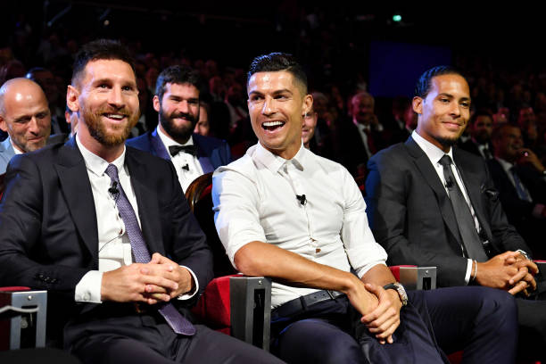
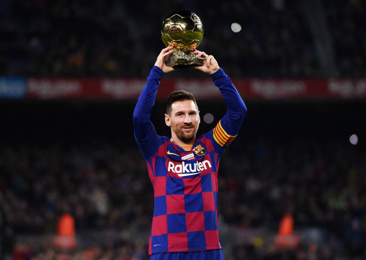
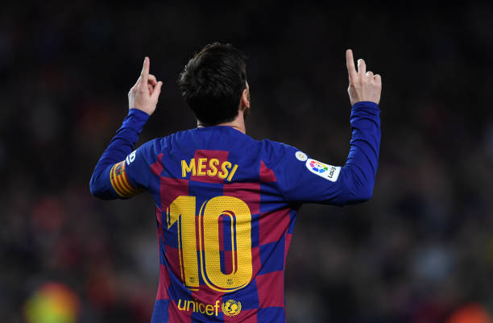
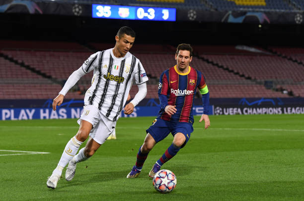
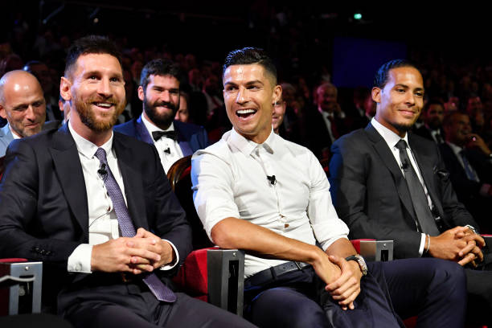
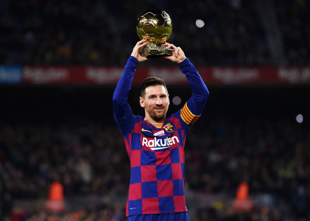
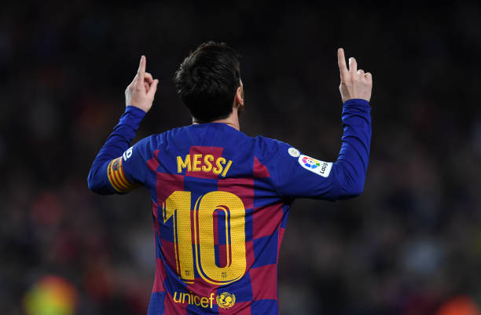
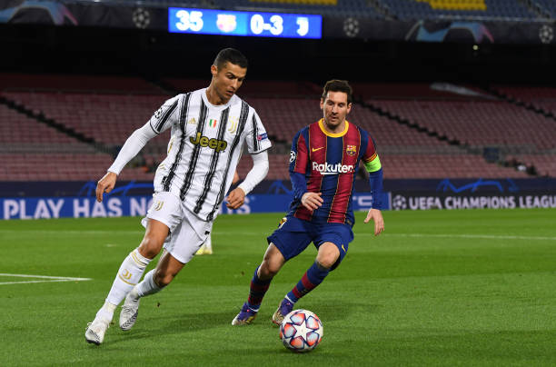

Our Player

Neymar Jr
Neymar da Silva Santos Júnior (born 5 February 1992), known as Neymar, is a Brazilian professional footballer who plays as a forward for Ligue 1 club Paris Saint-Germain and

Lionel Messi
Lionel Messi was born, 24 June 1987, in Rosario, Argentina to a working-class family. His father was a factory steel worker, and his mother a cleaner. He began playing from an early

Cristiano Ronaldo
Cristiano Ronaldo, in full Cristiano Ronaldo dos Santos Aveiro, (born February 5, 1985, Funchal, Madeira, Portugal), Portuguese football (soccer) forward who was one of the greatest

Paulo Dybala
Dybala was born in Laguna Larga, Córdoba, Argentina. His grandfather, Bolesław Dybała, was from the village of Kraśniów in Poland; he fled from his country of birth

Mesut Ozil
Mesut Özil (German pronunciation: [ˈmeːzut ˈøːzil], Turkish: [meˈsut œˈzil]; born 15 October 1988) is a German professional footballer who plays as an attacking

Mauro Icardi
Mauro Emanuel Icardi is an Argentinean professional football player who presently plays as a striker for the Argentinean national football team and for the Italian

Di Maria
Ángel Fabián Di María (born 14 February 1988) is an Argentine professional footballer who plays for Ligue 1 club Paris Saint-Germain and the Argentina national team.

Kylian Mbappé
Kylian Mbappé Lottin (born 20 December 1998) is a French professional footballer who plays as aforward for Ligue 1 club Paris Saint-Germain and the France national

Mohamed Salah
Mohamed Salah is an Egyptian footballer who plays as a forward for the Egyptian national team as well as the Premier League club 'Liverpool. ' a,

Harry Kane
Harry Edward Kane MBE (born 28 July 1993) is an English professional footballer who plays as astriker for Premier League club Tottenham Hotspur and captains

Kevin De Bruyne
Kevin De Bruyne (born 28 June 1991) is a Belgian professional footballer who plays as a midfielder for Premier League club Manchester City, where he is

Philippe Coutinho
Philippe Coutinho Correia (born 12 June 1992) is a Brazilian professional footballer who plays asan attacking midfielder or winger for Spanish club Barc

 






